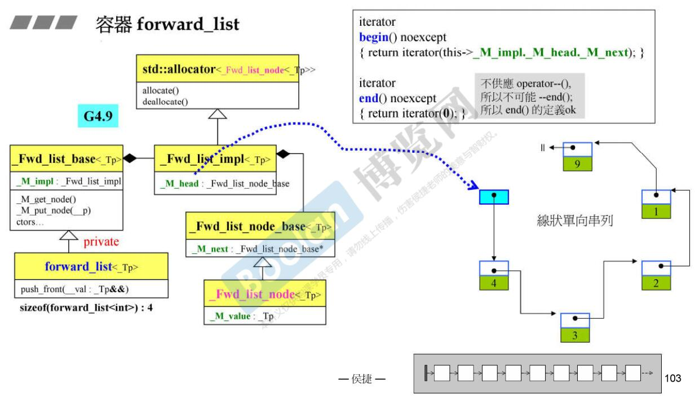

学习目标参考资料STL六大部件容器分类迭代器分类stl使用的是堆内存还是栈内存？STL各种容器、迭代器汇总容器的各种遍历方式STL容器的使用和源码分析总述arrayvectorlistforward_listdequequeue/priority_queuestackset/multisetmap/multimapunordered_set/unordered_multisetunordered_map/unordered_multimaptuplebitset友元、模板、运算符重载全特化与偏特化常见算法字符串流其他
学习目标
- c++标准库（c++ Standard Library）
- STL标准模板库（Standard Template Llibrary）
参考资料
重要网站
参考书籍
- STL源码剖析(侯捷)
STL六大部件
- 容器（Containers）
- 分配器（Allocators）
- 算法（Algorithms）
- 迭代器（Iterators）
- 适配器（Adapters）
- 仿函式（Functors）
容器分类
- 序列式容器：
- 适配器：
xxxxxxxxxx// 基于deque(list)的queue; 基于vector->heap的priority_queue;// 基于deque(list/vector)的stack;- 关联式容器：
xxxxxxxxxx// set multiset// map multimap// unordered_set unordered_multiset// unordered_map unordered_multimap- 容器结构分析：

迭代器分类
- stl五种迭代器：
- 输出迭代器（Output iterator）
- 输入迭代器（Input iterator）
- 前向迭代器（Forward iterator） --- 继承自输入迭代器
- 双向迭代器（Bidirectional iterator） --- 继承自前向迭代器
- 随机存取迭代器（Random access iterator） --- 继承自双向迭代器
stl使用的是堆内存还是栈内存？
- array定长数组：占用栈内存。
- 其他大部分容器：基础变量结构(类似一个头部信息)，会存放在栈上，大量的数据会存放在堆上(allocator调用new/delete操作符进行批量的内存分配)。
例如：vector内部会维护三个指针类型（64位系统上每个指针占8byte），分别指向目前使用空间的头部、尾部以及可用空间的尾部，所以sizeof(vector<int>)=8*3=24byte，但是实际存储的大量数据是通过new在堆上创建的，sizeof只会计算类中栈空间大小，也就是定义vector这个容器需要的空间大小，所以动态增加元素时，sizeof(vector<int>)=24byte。
说明：一个指针所占的字节数跟系统的寻址能力有关，16位系统，指针占2个字节；32位系统指针占4个字节；64位系统，指针占8个字节（64位系统，int占4字节，指针占8字节）。
STL各种容器、迭代器汇总
容器类型占栈空间大小（sizeof() -- 一个对象被创建时，需要开辟栈空间的字节数）。
容器的迭代器类型。
容器迭代器类型占栈空间的大小。
说明：占空间大小会受到平台源码实现、系统寻址能力等的影响。
xusing namespace std;int main() {// 测试: 64位系统上一个指针占8个字节cout << sizeof(int*) << endl;// vector类的栈空间有三个指针（指向当前空间的头尾和可用空间的尾部 3*8=24byte）// sizeof计算的是实例化这个类型的对象，需要开辟多大的空间，所以是恒量24byte，解释见size_of_t.cppcout << sizeof(vector<int>) << endl;// 向vector灌入大量数据，由于数据是在堆上开辟空间，所以栈空间一直是24bytevector<int> vi = {12, 34, 5, 15, 100};cout << sizeof(vi) << endl; // 24 bytevi.push_back(200);cout << sizeof(vi) << endl; // 24 byte// *************测试各种容器占用的栈空间的大小*****************cout << "sizeof(array<int, 100>)=" << sizeof(array<int, 100>) << endl;cout << "sizeof(vector<int>)=" << sizeof(vector<int>) << endl;cout << "sizeof(list<int>)=" << sizeof(list<int>) << endl;cout << "sizeof(forward_list<int>)=" << sizeof(forward_list<int>) << endl;cout << "sizeof(deque<int>)=" << sizeof(deque<int>) << endl;cout << "sizeof(stack<int>)=" << sizeof(stack<int>) << endl;cout << "sizeof(queue<int>)=" << sizeof(queue<int>) << endl;cout << "sizeof(set<int>)=" << sizeof(set<int>) << endl;cout << "sizeof(map<int, int>)=" << sizeof(map<int, int>) << endl;cout << "sizeof(multiset<int>)=" << sizeof(multiset<int>) << endl;cout << "sizeof(multimap<int, int>)=" << sizeof(multimap<int, int>) << endl;cout << "sizeof(unordered_set<int>)=" << sizeof(unordered_set<int>) << endl;cout << "sizeof(unordered_map<int, int>)=" << sizeof(unordered_map<int, int>) << endl;cout << "sizeof(unordered_multiset<int>)=" << sizeof(unordered_set<int>) << endl;cout << "sizeof(unordered_multimap<int, int>)=" << sizeof(unordered_map<int, int>) << endl;// *************测试各种迭代器占用的栈空间的大小*****************cout << "sizeof(array<int, 100>::iterator)=" << sizeof(array<int, 100>::iterator) << endl;cout << "sizeof(vector<int>::iterator)=" << sizeof(vector<int>::iterator) << endl;cout << "sizeof(list<int>::iterator)=" << sizeof(list<int>::iterator) << endl;cout << "sizeof(forward_list<int>::iterator)=" << sizeof(forward_list<int>::iterator) << endl;cout << "sizeof(deque<int>::iterator)=" << sizeof(deque<int>::iterator) << endl;// cout << "sizeof(deque<int>::iterator)=" << sizeof(stack<int>::iterator) << endl; // error stack不提供迭代器// cout << "sizeof(deque<int>::iterator)=" << sizeof(queue<int>::iterator) << endl; // error queue不提供迭代器cout << "sizeof(set<int>::iterator)=" << sizeof(set<int>::iterator) << endl;cout << "sizeof(map<int, int>::iterator)=" << sizeof(map<int, int>::iterator) << endl;cout << "sizeof(multiset<int>::iterator)=" << sizeof(multiset<int>::iterator) << endl;cout << "sizeof(multimap<int, int>::iterator)=" << sizeof(multimap<int, int>::iterator) << endl;cout << "sizeof(unordered_set<int>::iterator)=" << sizeof(unordered_set<int>::iterator) << endl;cout << "sizeof(unordered_map<int, int>::iterator)=" << sizeof(unordered_map<int, int>::iterator) << endl;cout << "sizeof(unordered_multiset<int>::iterator)=" << sizeof(unordered_multiset<int>::iterator) << endl;cout << "sizeof(unordered_multimap<int, int>::iterator)=" << sizeof(unordered_multimap<int, int>::iterator) << endl;// *************测试各种容器的迭代器的类型*****************cout << "iterator_tag array=" <<typeid(iterator_traits<array<int, 100>::iterator>::iterator_category).name() << endl;cout << "iterator_tag vector=" <<typeid(iterator_traits<vector<int>::iterator>::iterator_category).name() << endl;cout << "iterator_tag list=" <<typeid(iterator_traits<list<int>::iterator>::iterator_category).name() << endl;cout << "iterator_tag forward_list=" <<typeid(iterator_traits<forward_list<int>::iterator>::iterator_category).name() << endl;cout << "iterator_tag deque=" <<typeid(iterator_traits<deque<int>::iterator>::iterator_category).name() << endl;// cout << "iterator_tag stack=" <<// typeid(iterator_traits<stack<int>::iterator>::iterator_category).name() << endl; // error stack不提供迭代器// cout << "iterator_tag queue=" <<// typeid(iterator_traits<queue<int>::iterator>::iterator_category).name() << endl; // error queue不提供迭代器cout << "iterator_tag set=" <<typeid(iterator_traits<set<int>::iterator>::iterator_category).name() << endl;cout << "iterator_tag map=" <<typeid(iterator_traits<map<int, int>::iterator>::iterator_category).name() << endl;cout << "iterator_tag multiset=" <<typeid(iterator_traits<multiset<int>::iterator>::iterator_category).name() << endl;cout << "iterator_tag multimap=" <<typeid(iterator_traits<multimap<int, int>::iterator>::iterator_category).name() << endl;cout << "iterator_tag unordered_set=" <<typeid(iterator_traits<unordered_set<int>::iterator>::iterator_category).name() << endl;cout << "iterator_tag unordered_map=" <<typeid(iterator_traits<unordered_map<int, int>::iterator>::iterator_category).name() << endl;cout << "iterator_tag unordered_multiset=" <<typeid(iterator_traits<unordered_multiset<int>::iterator>::iterator_category).name() << endl;cout << "iterator_tag unordered_multimap=" <<typeid(iterator_traits<unordered_multimap<int, int>::iterator>::iterator_category).name() << endl;system("pause");return 0;}/*输出结果：# 容器类占用栈空间大小（64位系统测试结果）：sizeof(array<int, 100>)=400 // 内部维护一个定长的栈数组 -> sizeof(int)*100=400sizeof(vector<int>)=24 // 当前使用节点的头尾指针，可用空间的尾指针 -> 3*8=24sizeof(list<int>)=24 // 指向链表首节点的指针（节点包含：int类型的data，前向指针，后向指针）sizeof(forward_list<int>)=8 // 指向链表首节点的指针（节点包含：int类型的data，一个前向指针）sizeof(deque<int>)=80 // 中控节点map的首地址(8)、map的长度(8)、指向首数据段的iterator(4*8)、指向尾数据段的iterator(4*8)sizeof(stack<int>)=80 // deque的封装sizeof(queue<int>)=80 // deque的封装sizeof(set<int>)=48 // 内部维护一课红黑树，sizeof(map<int, int>)=48 // 红黑树的一个节点(4*8=32)（颜色枚举、指向父节点的指针、指向左右孩子的指针）,节点数量(8)，指向root节点的指针(8)sizeof(multiset<int>)=48 // 类似mapsizeof(multimap<int, int>)=48 // 类似mapsizeof(unordered_set<int>)=56 // 内部维护一个vector类型的buckets(24),元素个数(sizeof(size_t)=8)，用于控制什么时候rehashing，// 三个空的函数对象（获取key，key的比较，hash函数），各占一个1 byte, 3+8+24=40, 4字节对齐，调整为40// 由于不同c++库里实现方式不一样，可能还有其他的栈对象，我在64位windows下测试是56，具体的看源码。sizeof(unordered_map<int, int>)=56sizeof(unordered_multiset<int>)=56sizeof(unordered_multimap<int, int>)=56# 迭代器类占用栈空间大小（64位系统测试结果）：sizeof(array<int, 100>::iterator)=8sizeof(vector<int>::iterator)=8sizeof(list<int>::iterator)=8sizeof(forward_list<int>::iterator)=8sizeof(deque<int>::iterator)=32sizeof(set<int>::iterator)=8sizeof(map<int, int>::iterator)=8sizeof(multiset<int>::iterator)=8sizeof(multimap<int, int>::iterator)=8sizeof(unordered_set<int>::iterator)=8sizeof(unordered_map<int, int>::iterator)=8sizeof(unordered_multiset<int>::iterator)=8sizeof(unordered_multimap<int, int>::iterator)=8# 容器的迭代器类型iterator_category array=random_access_iterator_tagiterator_category vector=random_access_iterator_tagiterator_category deque=random_access_iterator_tagiterator_category list=bidirectional_iterator_tagiterator_category forward_list=forward_iterator_tagiterator_category set=bidirectional_iterator_tagiterator_category map=bidirectional_iterator_tagiterator_category multiset=bidirectional_iterator_tagiterator_category multimap=bidirectional_iterator_tagiterator_category unordered_set=forward_iterator_tagiterator_category unordered_map=forward_iterator_tagiterator_category unordered_multiset=forward_iterator_tagiterator_category unordered_multimap=forward_iterator_tag*/sizeof特别说明：
xxxxxxxxxxusing namespace std;/*1. sizeof和strlen的区别：（1）sizeof是运算符，strlen是函数。（2）strlen只能用char*做参数，且必须是以'\0'结尾的。->计算字符串首地址到\0之前的字节数。（3）sizeof的本质是得到某个类型的大小，也就是当创建这个类型的一个对象（或变量）的时候，需要为它分配的空间的大小。char str[20]="0123456789";int a=strlen(str); // a=10;int b=sizeof(str); // b=20;short f(); // sizeof(f()) == sizeof(short)2. 结构体计算占用字节大小：原则：结构体变量中每个成员的偏移量必须是当前这个成员大小的整数倍。（首元素偏移量是0）*/struct A {char c;static int i;};struct B{float f; // 偏移量是0，占4 bytechar p; // 偏移量>=4,这里取离4最近的sizeof(char)=1的整数倍->4， 占1 byteint adf[3]; // 偏移量>=5,这里取离5最近的sizeof(int)=4的整数倍->8，占12字节// 统计结果，占20个字节};int main() {// ******************** 关于sizeof ************************// 基础数据（64位系统的测试）cout << "char=" << sizeof(char) << endl; // char=1cout << "short=" << sizeof(short) << endl; // short=2cout << "int=" << sizeof(int) << endl; // int=4cout << "long=" << sizeof(long) << endl; // long=8（32位系统long占4字节）cout << "long=" << sizeof(long long) << endl; // long long=8cout << "float=" << sizeof(float) << endl; // float=4cout << "double=" << sizeof(double) << endl; // double=8cout << "pointer=" << sizeof(int*) << endl; // pointer=8// 类/结构体中的静态变量、堆空间new的变量都不会被sizeof统计// 原因：sizeof的本质是得到某个类型的大小，// 确切的来说就是当创建这个类型的一个对象（或变量）的时候，需要为它分配的空间的大小。// 实际上，在类中，sizeof只计算类内部栈空间的大小，// static是被分配在静态区供各实例共享的，实例化类对象时不需要再对其分配空间。// 堆空间是各种实例创建后各自通过程序员动态开辟的，也不计算在内，如stl各种容器。cout << "sizeof(A)=" << sizeof(A) << endl; // sizeof(A)=1// static不在类中的时候，为static类型（static int等等）定义一个变量的时候，是必须要分配空间的。static int a;cout << "static int=" << sizeof(a) << endl; // static int=4// ******************** 关于关于结构体/类的对齐 ************************cout << "sizeof(B)=" << sizeof(B) << endl; // sizeof(B)=20system("pause");return 0;}
容器的各种遍历方式
xxxxxxxxxx// ostream_iteratorusing namespace std;// 函数指针void printItem(const int& item) { cout << item << " ";}// 函数对象（仿函数，用struct比较方便，默认是public）struct printItem1 { void operator() (const int& item) { cout << item << " "; }};// 函数模板（函数模板实例化后就如同一个函数指针一样用。printItem == printItem2<int>）template<typename T>void printItem2(const T& item) { cout << item << " ";}int main(){ // vector的那种遍历方法 ,支持随机访问迭代器的容器都可用类似的方法 vector<int> vi = {3, 5, 7, 10}; // 第一种: c++11的 for_loop for (auto v : vi) { cout << v << endl;} for (auto& v : vi) { v *= 10; cout << v << endl;} // 第二种: 迭代器访问 vector<int>::iterator it = vi.begin(); for (; it != vi.end(); it++) { cout << *it << endl; } for (auto it1 = vi.begin(); it1 != vi.end(); ++it1) { cout << *it1 << endl; } // 第三种: 下标访问 for (int i = 0; i < vi.size(); i++) { cout << vi[i] << " " << vi.at(i) << endl; } // 第四种: stl中for_each算法，此处匿名函数可以换成仿函数、函数指针、函数模板等 cout << endl << "function pointer..."; for_each(vi.begin(), vi.end(), printItem); // 函数指针（函数名） cout << endl << "function object..."; for_each(vi.begin(), vi.end(), printItem1()); // 函数对象（仿函数） cout << endl << "function template..."; for_each(vi.begin(), vi.end(), printItem2<int>); // 函数模板 cout << endl << "lambda expression..."; for_each(vi.begin(), vi.end(), [](const int& item)->void {cout << item << " ";}); // 匿名函数 // 第五种：copy到标准输出流 // ostream_iterator (ostream_type& s, const char_type* delimiter); copy(begin(vi), end(vi), ostream_iterator<int> {std::cout, " "}); copy(vi.begin(), vi.end(), ostream_iterator<int>(cout, " ")); system("pause"); return 0;}STL容器的使用和源码分析
总述
array/vector -- 顺序容器、连续空间
list/forward_list -- 顺序容器，非连续空间
deque -- 顺序容器，分段连续空间(模拟连续空间)
stack/queue/priority_queue -- 容器适配器
- priority_queue底层是通过vector实现的一个大根堆(默认大根堆,大的元素优先出队)；
- stack底层是deque，支持一端插入删除，也可以用list和vector实现；
- queue底层是deque，支持一端插入，一端删除，也可以用list实现。
- 说明：以上是标准用法，其实只要保证合法操作，也可以用vector当做一个栈使用，这样既可以保证后进先出（push_back/pop_back），又可以进行顺序访问和遍历。-- 某些场景下有这个需求。
set/map/multiset/multimap -- 基于红黑树、key有序的关联容器
unordered_set/unordered_map/unordered_multiset/unordered_multimap -- 基于hashtable，key无序的关联容器
array
array的使用
xxxxxxxxxx// qsort bsearch NULLusing namespace std;/*迭代器：random_access_iterator_tag（随机访问迭代器）赋值：统一初始化列表 {}；通过下标或者迭代器；fill()；访问：随机访问迭代器可以访问任意位置的元素：front()back()at()[]方法：data()size()max_size()empty()swap()*/const size_t ASIZE = 100;int main(){// ********** 赋值array<long, ASIZE> c {1, 2}; // 1.统一初始化列表，未初始化的默认为0c.fill(-1); // 2.批量赋值for(size_t i = 0; i < ASIZE; i++) {c[i] = rand(); // 3.通过下标赋值}// ********** 访问cout << "array.front()=" << c.front() << endl;cout << "array.back()=" << c.back() << endl; // 获取首尾元素assert(c.at(5) == c[5]); // at()有越界检查的功能，[]没有越界检查，但是效率更高cout << "array.size()=" << c.size() << endl; // 元素个数cout << "array.max_size()=" << c.max_size() << endl; // 最多能容纳的元素个数cout << "array.data()=" << c.data() << endl; // 数组首地址，类似c数组的数组名assert(c.empty() == false); // 判空// ********** 算法// 快速排序 qsort，头文件stdlib.h// void qsort(void *base, int nelem, int width, int (*fcmp)(const void *,const void *));qsort(c.data(), ASIZE, sizeof(long), compareLongs); // sort是qsort改进版本，c++建议用sortfor_each(c.begin(), c.end(), show_item<long>);cout << endl;// 二分查找 bsearch，头文件stdlib.h// void* bsearch(const void *key, const void *base, size_t nelem, size_t width, int (*comp)(const void *, const void *)); -- 自定义比较函数返回值是intlong data = 17421;long* pItem = (long *)bsearch(&data, c.data(), ASIZE, sizeof(long), compareLongs);if (pItem != NULL) {cout << "found: " << *pItem << endl;} else {cout << "Not found" << endl;}// 交换array<long, 100> c2 {1, 2, 3};c.swap(c2); // 交换两个容器中的元素，两容器对象定义必须一致 array<long, 100>system("pause");}array内存结构

vector
vector使用
xxxxxxxxxxusing namespace std;/*迭代器：random_access_iterator_tag（随机访问迭代器）赋值：1. 在尾部插入删除：push_back();pop_back();2. 修改已添加的元素值：通过迭代器或者下标[]3. 在任意位置插入删除（需要大量移动元素，不如list高效）：insert()erase() // [!!! 擦除 !!!]erase和insert配对，通过游标操作，彻底的擦除元素remove() // [!!! 移动 !!!]算法库（注意vector并没有remove成员函数）中的remove是将指定元素移动到容器的尾部并不减少vector的size,// vector需要用remove和erase配合使用彻底的擦除指定元素,// 为什么这样？因为不同容器的删除方式不一样，不能做出通用性的删除动作。访问：随机访问迭代器可以访问任意位置的元素：front()back()at()[]方法：size()max_size()capacity()empty()data()reserve()resize()swap()*/int main() {// ********** 赋值vector<string> c {"hello", "world"}; // 1.统一出初始化列表char buf[10];for (size_t i = 0; i < 100; i++) {snprintf(buf, 10, "%d", i);c.push_back(string(buf));}c.pop_back(); // 2.插入->只能在元素尾部插入删除 push_back/pop_backc[2] = "inserter"; // 3.覆盖赋值->通过随机迭代器的iterator和下标[]for_each(c.begin(), c.end(), show_item<string>);cout << endl;// ********** 访问cout << "vector.front()=" << c.front() << endl;cout << "vector.back()=" << c.back() << endl; // front/back: 返回首尾元素的引用cout << "*(c.begin())=" << *(c.begin()) << endl;assert(*(--c.end()) == c.at(c.size() - 1)); // begin/end: 返回首尾元素的迭代器,前闭后开// ********** 方法cout << "vector.size()=" << c.size() << endl; // 元素个数cout << "vector.capacity()=" << c.capacity() << endl; // 当前申请的空间可容纳元素的个数cout << "vector.max_size()=" << c.max_size() << endl; // 最多可添加的元素个数assert(sizeof(c) == sizeof(vector<int>)); // 实例化vector需要的字节数 24bytecout << "vector.data()=" << c.data() << endl; // 首地址assert(c.empty() == false); // 判空// resize和reserve:// resize(Container::size_type n) :// n小于当前容量时，尾部多余元素被截断销毁，n大于当前容量时，新默认构造元素添加到尾部，也会发生重新分配。// reserve(Container::size_type n) n不小于当前大小，扩容到指定大小，预先空间分配，一般定义容器时调用。// ********* 算法// 查找auto fit = find(c.begin(), c.end(), "45");if (fit != c.end()) {cout << "find, " << *fit << endl;} else {cout << "not find" << endl;}// 交换vector<string> c2 {"hello", "china"};c.swap(c2);// remove/erase配合彻底删除指定元素vector<int> vi {23, 100, 5, 100, 33, -10}; // size=6std::vector<int>::iterator it = remove(vi.begin(), vi.end(), 100);// 此时size=6, it指向有效元素的下一个元素的位置，即指向第5个位置vi.erase(it, vi.end()); // 删除无效数据区间copy(vi.begin(), vi.end(), ostream_iterator<int>(cout, " ")); // 23 5 33 -10 size=4system("pause");return 0;}vector内存结构

list
list的使用
xxxxxxxxxxusing namespace std;/*迭代器：bidirectional_iterator_tag（双向迭代器）赋值：双向链表可以在任意位置高效的插入和删除元素：push_back()push_front()pop_back()pop_front()insert()erase() // erase和insert配对，通过游标操作，彻底的擦除元素（彻底删除，传指针参数 ）remove() // list成员函数中的remove可以移除指定值的节点，并释放资源（彻底删除，传值参数）// vector没有remove成员函数，调用的是算法库中的remove，不会真正删除，见vector示例代码。访问：双向迭代器只能访问收尾元素，或者双向顺序访问,不支持随机访问。front()back()方法：size()max_size()empty()reserve()resize()uniq()sort()vector和list的区别：vector是一块连续的内存，支持下标随机访问，但是插入和删除操作会导致大量内存拷贝，效率较低。list是双向链表，只能顺序访问，不支持随机访问，但是任何位置插入或删除非常迅速。结论：1. 如果需要高效的随机存取，不在乎插入删除效率，用vector；2. 如果需要大量的插入删除，而不在乎随机存取，用list；3. 如果既需要随机存取，又涉及两端数据的插入删除，用deque；*/int main() {// *********** 赋值// 1. 统一初始化列表list<string> c = {"you", "and", "me"};c.assign({"hate", "and", "and", "hate", "like", "and", "hate", "like", "like"});// 2. 在任意位置插入删除元素c.pop_front();c.pop_back();c.push_back("you");c.push_front("me"); // 支持收尾插入c.emplace_front("hate");c.emplace_back("like"); // push_back/push_front的右值引用版本（高效） emplace-安放c.insert(++begin(c), "inserter"); // 在第二个位置插入auto iit = c.begin();advance(iit, 5);c.insert(iit, 3, "100"); // 游标向前移动5个位置，插入3个"100"iit = c.begin();c.erase(iit);c.remove("hate"); // erase是删除迭代器所指位置(范围)的元素，remove是删除指定取值的元素。for_each(c.begin(), c.end(), show_item<string>);cout << endl;// *********** 访问cout << "list.front()=" << c.front() << endl;cout << "list.back()=" << c.back() << endl;// *********** 容量cout << "list.size()=" << c.size() << endl; // 元素个数cout << "list.max_size()=" << c.max_size() << endl; // 容器允许的最大元素数,跟平台有关// resize(Container::size_type n)// reserve(Container::size_type n)// *********** 算法c.sort(); // 排序for_each(c.begin(), c.end(), show_item<string>);cout << endl;c.unique(); // 去重for_each(c.begin(), c.end(), show_item<string>);cout << endl;c.remove("like"); // 删除c.remove("me");for_each(c.begin(), c.end(), show_item<string>);cout << endl;system("pause");return 0;}list的内存结构
list的迭代器结构

forward_list
forward_list的使用
xxxxxxxxxxusing namespace std;/*迭代器：forward_iterator_tag（前向迭代）特点：支持单向顺序访问；不支持反向迭代器rbegin()等；不提供size()成员函数；没有指向尾部元素的游标，所以没有back()/push_back()/pop_back()等操作。方法：push_front()pop_front()front()insert_after()erase_after()remove()*/int main() {forward_list<int> c;for(size_t i = 0; i < 10; i++) {c.push_front(i); // 9 8 7 6 5 4 3 2 1 0}c.pop_front(); // 8 7 6 5 4 3 2 1 0// 在迭代器it之后插入和删除操作forward_list<int>::iterator it = c.begin();advance(it, 3);c.insert_after(it, 888); // 8 7 6 5 888 4 3 2 1 0it = c.begin();advance(it, 5);c.erase_after(it); // 8 7 6 5 888 4 2 1 0c.remove(7); // 8 6 5 888 4 2 1 0assert(c.front() == 8);for_each(c.begin(), c.end(), show_item<int>);system("pause");return 0;}forward_list内存结构

deque
deque的使用
xxxxxxxxxxusing namespace std;/*迭代器：random_access_iterator_tag（随机访问迭代器）特点：1. 支持随机访问at/[], 性能略差于vector；2. 在两端插入和删除很高效，也支持在任意位置的插入和删除操作，但性能不及list；和vector操作上的区别：1. deque不提供容量操作 capacity() / reserve()；2. deque提供push_front() / pop_front()函数直接操作头部；3. 对deque的排序在性能上不高效，可以把deque中的元素移到vector进行排序，在移回来；*/int main() {// *********** 赋值deque<int> c {10, 20};c.assign({30, 40, 50});c.push_front(60);c.push_back(70);c.pop_back();c.pop_front(); // 1. 在收尾插入删除// 还有右值版本： c.emplace(), c.emplace_front(), c.emplace_back()c[1] = 80; // 2. 通过迭代器或者下标覆盖赋值auto it = c.begin();c.insert(it, {90, 100}); // 3. 在任意位置插入元素it = c.end();it--;c.erase(it); // 4.在任意位置删除元素for_each(c.begin(), c.end(), show_item<int>); // 90 100 30 80cout << endl;// ********* 随机访问assert(c.at(1) == 100); // 有越界检查assert(c[1] == 100); // 高效，但是没有越界检查assert(c.front() == 90);assert(c.back() == 80);// ********* 容量 （不支持reserve和capacity）cout << "deque.size()=" << c.size() << endl;cout << "deque.max_size()=" << c.max_size() << endl;c.resize(3); // 截断成3个元素 90 100 30// ************ 算法deque<int> d {100, 200};c.swap(d); // 交换两个容器的内容for_each(c.begin(), c.end(), show_item<int>);cout << endl;system("pause");return 0;}deque内存结构
deque迭代器结构

queue/priority_queue
queue/priority_queue的使用
xxxxxxxxxxusing namespace std;/*queue:容器适配器-队列方法：插入删除：push() / pop()访问：front() / back()容量：empty() / size()priority_queue：容器适配器-优先级队列方法：插入删除：push() / pop()访问：top()容量：empty() / size()priority_queue和queue的区别和联系(1) 二者都定义在头文件#include<queue>中，不提供迭代器，不提供遍历方法，不提供clear()接口。(2) queue是一个先进先出的线性存储表，一端插入，一端删除；(2) priority_queue支持自定义数据的优先级，让优先级高的排在前面，优先出队；(3) priority_queue默认底层容器是vector实现的大顶堆heap；默认比较函数是 less<int>，降序排序;queue默认的底层容器是deque，也可以用list。(4) priority_queue 只能通过 top() 函数来访问队首（堆顶）元素；queue可以通过front()和back()访问队首/队尾元素。*/int main() {// 1. 适配器：先进先出，不支持迭代器，不能用统一初始化列表// 基本操作：入队列、出队列、访问队首、队尾、判空queue<int> c;for(int i : {100, 200, 300, 400}) {c.push(i); // 插入}c.pop(); // 删除assert(c.front() == 200); // 访问第一个元素assert(c.back() == 400); // 访问最后一个元素// 2. 适配器，优先级队列priority_queue<int, vector<int>, greater<int>> q; // 升序队列，小根堆for (int n : {3, 5, 7, 2, 1, 10}) {q.push(n);}assert(q.top() == 1); // 访问q.pop(); // 删除assert(q.top() == 2);system("pause");return 0;}queue内存结构

stack
stack使用
xxxxxxxxxxusing namespace std;/*stack: 容器适配器 - 栈1. LIFO后进先出；2. 不支持迭代器，不提供遍历方法；3. 不是容器，不能直接用统一初始化列表进行初始化，-> 能不能用取决于源码有没有实现这个接口！！！但是在使用拷贝构造函数时，既可以用初始化列表，也可以用圆括号，如下：list<double> values {1.414, 3.14159265, 2.71828};stack<double, list<double>> my_stack(values); // 可以用底层容器构造，注意是()stack<double, list<double>> copy_stack {my_stack}; // 可以拷贝现有的stack容器方法：插入和删除：push() / pop()访问：top()容量：size() /empty()*/int main() {// 容器适配器：LIFO后进先出，不支持迭代器，不能直接用统一初始化列表// 基本操作：入栈、出栈、取栈顶、判空stack<int> c;c.push(100);c.push(200);c.push(300); // 插入c.pop(); // 删除assert(c.top() == 200); // 访问assert(c.size() == 2);assert(c.empty() == false);system("pause");return 0;}stack内存结构

set/multiset
set/multiset使用
xxxxxxxxxxusing namespace std;/*关联容器set：1. 迭代器：bidirectional_iterator_tag（双向迭代器）2. 底层结构是红黑树，默认比较函数是less<int>, 升序排序。插入：insert()，只能插入具体元素，指定在特定位置处插入无效，因为内部会自动排序。删除：只有erase()，没有remove()(这个和顺序容器有区别)，erase的作用是把符合要求的元素都删掉：(1) void erase (iterator position); // 删除指定位置(2) size_type erase (const value_type& val); // 删除等于指定值，类似顺序容器的remove(3) void erase (iterator first, iterator last); // 删除指定范围查找：set/map的优势是支持高效查找，时间复杂度logN:count() / find() / equal_range() / lower_bound() / upper_bound()*/int main() {// 底层结构是红黑树，默认比较函数是less<int>, 升序排序set<int> c {11, 12, 34, 22, 1};c.insert(100);c.insert(100); // set插入重复的元素不会生效c.insert({0, 200}); // 插入set<int> ci {1000, 2000};c.insert(ci.begin(), ci.end()); // 指定范围插入c.erase(22); // 删除值等于22的auto it = c.begin();advance(it, 3);c.erase(c.begin(), it); // 范围删除for_each(c.begin(), c.end(), show_item<int>);cout << endl; // 12 34 100 200// 查找assert(c.count(100) == 1);it = c.find(34);if(it != c.end()) {cout << "find=>" << *it << endl;}set<int, greater<int>> c2 {2, 4, 1, 5}; // 自定义排序函数for_each(c2.begin(), c2.end(), show_item<int>);cout << endl; // 5 4 2 1// multiset和set的区别是：// multiset可以插入重复的元素。multiset<int> mc {1, 2, 2, 5, 5, 5, 4, 3, 2};assert(mc.count(2) == 3);assert(mc.size() == 9);it = mc.find(5);if(it != mc.end()) {cout << "find=>" << *it << endl;}// 范围查找pair<multiset<int>::iterator, multiset<int>::iterator> ret;ret = mc.equal_range(5);cout << *(ret.first) << endl; // 第一个大于等于该元素的值cout << *(ret.second) << endl; // 第一个大于该元素的值 （类似左开右闭）for (auto it = ret.first; it != ret.second; it++) {cout << *it << endl; // 遍历范围查询结果}// 说明:set中由于没有重复元素，所以equal_range和find的作用是一样的，// 全局范围查找函数std::equal_range(forward_iter_begin, forward_iter_end, val),// 可以用于其他最低具备前向迭代器的容器的范围查找。system("pause");return 0;}set内存结构 set的底层结构是红黑树：


map/multimap
map/multimap使用
xxxxxxxxxxusing namespace std;/*方法：插入/删除：erase() / insert() / clear() / swap()查找：count() / find() / equal_range() / lower_bound() / upper_bound()（说明：由于是排序的，所以有lower_bound()和upper_bound()方法，unordered容器无此方法。）1. set / map / multiset / multimap 的共同点：(1) 以红黑树为底层容器，所有元素都会被自动排序；(2) 不能通过迭代器改变键值（set/multiset的值不能改；map/multimap的键值key不能改，可以改变value的值）2. set 和 map 的区别：set只有key，没有value（或者说value就是key），map的元素是key-value的键值对；3. set 和 multiset 的区别：set/map不允许键值(key)重复；multiset/multimap允许键值重复；4. set 和 unordered_set 的区别：(1) set基于红黑树实现，有自动排序的功能，查找/插入/删除 的时间复杂度o(logN);(2) unordered_set基于哈希表，查找/插入/删除 的时间复杂度o(1); 而代价是消耗比较多的内存，无自动排序功能。底层实现上，使用一个下标范围比较大的数组来存储元素，形成很多的桶，利用hash函数对key进行映射到不同区域进行保存。5. 关联式容器使用时需要注意，如果key不存在，使用map[key]会有意想不到的结果。可以用以下方式：方式1：if (m.count(key)>0) { do_something( m[key] ); }方式2：it=m.find(key); if (it!=m.end()) {do_something( m[key] ); }推荐使用方式2，因为方式1需要查两次，效率差。6. mp.at("key") 会进行越界检查，如果不存在key会抛出异常（out_of_range）;mp["key"] 没有越界检查-返回未定义的行为！！！如果不存在"key",会自动创建一个value为0的节点，这时候map的size+1了，同时返回0；7. 容器有通用的泛型方法find(begin，end，target)查找目标，但是这个方法是适用于所有容器的遍历式查找，并不高效，查找要使用map类成员mp.find(key)。8. 关联容器不可用算法库函数如lower_bound()，而其自带同名成员函数:如 myset.lower_bound( x )返回一个迭代器，若找不到返回end()迭代器。*/int main() {// map和set的区别：// set的key和value合而为一了。map<string, int> c = { {"zs", 90}, {"ls", 80}, {"ww", 100}};c.insert({ {"cbj", 100}, {"ll", 66}});assert(c.count("ww") == 1);assert(c.at("ls") == 80);auto it = c.find("zs"); // 迭代器返回的是一个pairif(it != c.end()) {cout << "find=>" << it->first << ", " << it->second << endl;}map<int, int> c2 = { {90, 90}, {80, 80}, {100, 100} };map<int, int>::iterator it1 = c2.lower_bound(90); // 返回第一个大于等于val的迭代器，这里指向90map<int, int>::iterator it2 = c2.upper_bound(90); // 返回第一个大于val的迭代器，这里指向100（右开区间）cout << "<*it1, *it2>=" << it1->first << ", " << it2->first << endl;// multimapmultimap<string, int> mm = { {"zs", 90}, {"ls", 80}, {"ww", 100} };mm.insert({ {"zs", 90}, {"zs", 90} });assert(mm.count("zs") == 3);system("pause");return 0;}map内存结构

unordered_set/unordered_multiset
unordered_set/unordered_multiset的使用
xxxxxxxxxxusing namespace std;/*set 和 unordered_set：如果元素为非基础类型，需要自定义哈希函数，具体使用和set类似；方法：插入/删除：erase() / insert() / clear() / swap()查找：count() / find() / equal_range()*/// 自定义hash函数（仿函数）struct VectorHash {size_t operator()(const vector<int>& v) const {std::hash<int> hasher;size_t seed = 0;for (int i : v) {seed ^= hasher(i) + 0x9e3779b9 + (seed<<6) + (seed>>2);}return seed;}};int main() {unordered_set<vector<int>, VectorHash> s;s.insert({1, 2});s.insert({1, 3});s.insert({1, 2});vector<int> i = {1, 2};auto it = s.find(i);if (it != s.end()) {vector<int> tmp = *it;for_each(tmp.begin(), tmp.end(), show_item<int>);}system("pause");return 0;}unordered_set内存结构
底层结构是hashtable：


unordered_map/unordered_multimap
unordered_map/unordered_multimap的使用
xxxxxxxxxxusing namespace std;/*说明元素为非基础类型，需要自定义哈希函数。方法插入/删除：erase() / insert() / clear() / swap()查找：count() / find() / equal_range() / at()*/int main() {unordered_map<string, int> m = { {"a", 80}, {"b", 100}, {"c", 90} };m.insert({"b", 200}); // 此条数据插入无效m.erase("c");assert(m.count("b") == 1);auto it = m.find("b");if (it != m.end()) {cout << it->first << ", " << it->second << endl; // b 100}cout << "m.at(\"a\")=" << m.at("a") << endl;try {cout << m.at("c") << endl;} catch (exception & e) {cout << e.what() << endl; // 捕获越界异常}// unordered_multimap// 根据key 插入/统计/删除/查找。unordered_multimap<string, int> um { {"a", 300}, {"a", 500} };um.insert({ {"a", 100}, {"b", 200}, {"c", 300} });assert(um.count("a") == 3);auto it1 = um.find("a");if (it1 != um.end()) {cout << "find=>" << it1->first << ", " << it1->second << endl; // a 100}// 范围查找pair<unordered_multimap<string, int>::iterator, unordered_multimap<string, int>::iterator> ret;ret = um.equal_range("a");for(auto it = ret.first; it != ret.second; it++) {cout << "equal_range=>" << it->first << ", " << it->second << endl;}system("pause");return 0;}unordered_map内存结构
tuple
tuple使用 元组容器：支持用户自定义元素的个数和类型。
xxxxxxxxxxusing namespace std;const double EPS = 1e-6;int main() {auto c2 = make_tuple("zs", 12.34);// 取值和赋值get<1>(c2) = 88.8;assert(fabs(get<1>(c2) - 88.8) < EPS);assert(get<0>(c2) == "zs");tuple<string, int, char> c = {"cbj", 80, 'y'}; // 统一初始化列表// 获取元组中元素数量 -- tuple_size<decltype(c)>::valuesize_t num = tuple_size<decltype(c)>::value;cout << "tuple size= " << num << endl;// 获取指定index的元素的类型 -- tuple_element<0, decltype(c)>::typecout << "tuple type= " << typeid(tuple_element<0, decltype(c)>::type).name() << endl;tuple_element<0, decltype(c)>::type s; // 等价于 string s;// string s;int i;tie(s, i, std::ignore) = c; // unpack elements (with ignore) 任何类型都可以用std::ignore占位assert(s == get<0>(c));assert(i == get<1>(c));system("pause");return 0;}tuple的实现 （见c++11新特性的笔记）
bitset
xxxxxxxxxxusing namespace std;// 应用： https://blog.csdn.net/The_sam/article/details/70982091int main(){ bitset<32> bitvec; // 32个bit位，全为0 bitset<10> bitvec2("1100"); // 第2，3位置为1，其余位置为0 int data = 100; bitset<20> bitvec3(data); // 二进制表示为 1100100 cout << "bitvec2.count()=" << bitvec2.count() << endl; // 2 cout << "bitvec3.count()=" << bitvec3.count() << endl; // 3 cout << "sizeof(bitvec3)=" << sizeof(bitvec3) << endl; // 4byte bitvec2.reset(); // 全部置0， set是全部置1 cout << "bitvec2.any()=" << bitvec2.any() << endl; // 测试是否有一个bit位为1 // 十进制转二进制 bool flag = false; for(int i=19; i>=0; i--) { if (bitvec3.test(i)) flag = true; // 从第一个非0开始输出（测试某一个bit是否为1） if (flag) { cout << bitvec3[i]; } } cout << endl; system("pause"); return 0;}友元、模板、运算符重载
友元分类（friend）
- 友元类
- 友元函数
- 友元成员函数
模板分类（template）
- 类模板
- 函数模板
- 成员模板
运算符重载
xxxxxxxxxxusing namespace std;/*1. 运算符重载使得用户自定义的类型以一种更简洁的方式工作。运算符重载只是对运算符作出了新的解释，原有基本语义基本不变，- 不改变运算符的优先级；- 不改变运算符的结合性；- 不改变运算符所需要的操作数；- 不创建新的运算符。2. 实现方式：成员函数全局函数友元函数1. 定义友元是为了访问类的私有成员。2. 友员函数没有 this 指针，所需操作数都必须在参数表显式声明。3. 操作符重载的结果是一个函数，重载步骤：函数名称：operator{运算符}函数参数：操作数函数返回值：引用/指针/值4. 重载++/-- 的注意事项后置++和后置--，增加一个伪参数int来标识5. 重载<< 和链式编程函数返回值是引用类型：左值引用（&）可以充当左值，执行链式操作（连续运用操作符号）。函数返回值是值类型：返回的是拷贝的一个临时对象，是右值，不能执行链式操作。6. 如果待重载的运算符需要两个操作数：成员函数情况下，只需要一个参数，因为this指针（类本身）就是一个操作数了；友元函数情况下，需要两个参数代表两个操作数。7. 案例：自己实现复数类，并重载 + /- /<< /++ /-- 运算符*/class Complex {public:Complex(int re = 0, int im = 0) {this->real = re;this->imag = im;}~Complex(){ }// 重载+运算符（成员函数）Complex operator+ (const Complex& other) {return Complex(this->real + other.real, this->imag + other.imag);}// 重载+运算符（友元函数）friend Complex operator- (Complex &c1, Complex &c2);// 重载<<运算符（友元函数）friend ostream& operator<< (ostream& out, Complex& c) {out << "< real=" << c.real << " imag=" << c.imag << " >";return out;}// 重载前置++运算符Complex& operator++ () {this->real++;this->imag++;return *this;}// 重载后置++运算符 int标识Complex& operator++ (int) {Complex c(this->real, this->imag);this->real--;this->imag--;return c;}private:int real;int imag;};// 重载-操作符（全局函数）Complex operator- (Complex &c1, Complex &c2) {Complex c(c1.real - c2.real, c1.imag - c2.imag);return c;}int main(){Complex c1(2, 3), c2(2, 2);Complex c3 = c1 + c2;cout << "c3 =>" << c3 << endl;c3++;cout << "c3++ =>" << c3 << endl;++c3;cout << "++c3 =>" << c3 << endl;system("pause");return 0;}
全特化与偏特化
类模板：全特化/偏特化
函数模板：只能全特化，偏特化通过函数重载实现。
偏特化在STL中的应用示例
xxxxxxxxxxusing namespace std;/*1. 模板与特化：类模板和函数模板都必须定义在.h文件中，特例化版本必须与模板定义在同一个.h头文件中；模板的实例化类型确定是在编译期间；特化/偏特化 主要的用途都是对于特定的类型，指定特定的处理方式，编译阶段确定如果符合某个特化版本，就用特化的模板；如果都不是，就用最一般的模板。特例化本质上是我们顶替了编译器的工作，我们帮编译器做了类型推导，全特化本质上是一个实例，而偏特化本质上还是一个模板，只是原来模板的一个子集。2. 偏特化在STL中的应用：应用1：使迭代器既可以萃取出值类型，又可以包容原生指针(1) 在每个迭代器中都定义了一个类型别名 -- value_type，这样直接通过迭代器的value_type类型成员就可以知道值类型。(2) 但是迭代器必须兼容原生态的指针，而原生指针很难被重新定义(如在原生指针的类中添加value_type的值类型的类型成员),这时候，靠的就是类模板的偏特化了,新添加一层iterator_traits类，专门萃取迭代器的属性，然后再对iterator_traits类设计原生指针与原生引用的偏特化版本，就解决了这个棘手的问题。应用2：type_traits类型萃取，对待特殊类型，特殊处理，提高效率举例：比如copy函数，如果传递的对象是一个复杂类型，那么可能只能采取最保守的处理方式，一个一个的构造；如果是内置类型，这样显然太低效，使用memcpy()可能会好一些。3. typename的用法：1. 声明模板参数，可以替换为class。template <typename T>2. 声明后边所指是一个类型。template<typename C>void print2nd(const C& container){if(container.size() >= 2){C::const_iterator it(container.begin());++it;int value = *it;cout<<value;}}模板被解析时，C的类型还不确定，所以编译器不知道const_iterator是个类型，万一它是个变量呢？需要这样声明才可以： typename C::const_iterator it(container.begin());*/// 其中一种迭代器，可以有多种，内部需定义value_typetemplate <typename T>class myIterator {public:typedef T value_type;};// 泛化版本template <typename T>class Traits {public:typedef typename T::value_type value_type;};// 特化版本(原生态指针会优先调用此版本)template <typename T>class Traits<T*> {public:typedef T value_type;};// 实现一个简单的算法类，既支持迭代器，又支持原生态指针template <typename I> // I可以是任意定义了value_type的迭代器，或者原生态指针typename Traits<I>::value_type Fool(I i) {// TODO}int main() {int *p;int i = Fool(p);myIterator<char> it;Fool(it);system("pause");return 0;}STL中iterator_traits实现


常见算法
STL常见算法示例
xxxxxxxxxx// std::minus// std::accumulate// std::ostream_iteratorusing namespace std;/*STL算法部分：#include <algorithm> // 大量的算法函数#include <numeric> // 定义了一些数值算法#include <functional> // 定义了一些模板类，用于声明函数对象常用算法举例：** 查找[algorithm]：count/count_if：统计等于某个值/符合某个判断条件的元素个数。find/find_if: 查找，返回指向该元素的迭代器。equal_range: 查找，返回一对iterator（lower_bound和upper_bound）。search: 查找一个子序列第一次出现的位置。search_n: 查找val出现n次的子序列。unique/unique_copy: 清除序列中重复元素，和remove类似，它也不能真正删除，将相同元素排到后边去。lower_bound/ upper_bound/ binary_search:1. 返回大于等于val的第一个元素的迭代器：ForwardIterator lower_bound(ForwardIterator first, ForwardIterator last, const Tp& val);2. 返回大于val的第一个元素的迭代器：ForwardIterator upper_bound(ForwardIterator first, ForwardIterator last, const Tp& val);2. 二分查找val是否存在：bool binary_search(ForwardIterator first, ForwardIterator last, const Tp& val);！！！注意：unique、binary_search、lower_bound、upper_bound使用的前提都是先sort！！！** 排序[algorithm]：sort: 升序排序stable_sort: 与sort类似，不过保留相等元素之间的顺序关系（稳定）。reverse: 将指定范围内元素重新反序排序。merge: 合并两个有序序列，存放到另一个序列。random_shuffle: 对指定范围内的元素随机调整次序。nth_element: 将范围内的序列重新排序，使所有小于第n个元素的元素都出现在它前面，而大于它的都出现在后面。** 删除和替换[numeric]：copy: 复制序列。copy_backward: 与copy相同，不过元素是以相反顺序被拷贝。remove/remove_if: 删除范围内所有等于指定元素的元素（不是真的删除，可能是移动到尾部）。remove_copy/remove_copy_if: 将所有不匹配元素复制到一个指定容器。replace/replace_if: 将范围内指定值(满足指定条件)的元素用新值代替。replace_copy/replace_copy_if:同上，不过将结果拷贝到另一个容器。swap: 交换存储在两个容器中的元素。swap_range: 将指定范围内的元素与另一个序列元素值进行交换。** 排列组合[algorithm]：next_permutation:// 获取下一个排列数，n个不同的字 符有 n! 种排列// 下一个排列大于上一个排列时返回 true，如果上一个排列是序列中最大的，它返回 false，所以会生成字典序最小的排列。// 列出所有全排列：// 方法一：先排序，在执行while循环；// 方法二：for循环n!次调用次函数；prev_permutation:** 数值算法[numeric]:accumulate: 累计到某一初始值（默认是加法）。partial_sum: 创建一个新序列，其中每个元素值代表指定范围内该位置前所有元素之和。inner_product: 计算内积(对应元素相乘，再求和)。adjacent_difference: 创建一个新序列，新序列中每个新值代表当前元素与上一个元素的差。** 生成和变异算法[algorithm]：fill/fill_n: 将输入值赋给标志范围内的元素。for_each：用指定函数依次对范围内所有元素进行迭代访问。generate/generate_n: 连续调用输入的函数来填充指定的范围。transform: 将输入的操作作用于范围内的每个元素，并产生一个新的序列。** 关系算法[algorithm]：equal: 如果两个序列在标志范围内元素都相等，返回true。max: 返回两个元素中较大一个。min: 返回两个元素中较小一个。max_element: 返回一个ForwardIterator，指出序列中最大的元素。min_element: 返回一个ForwardIterator，指出序列中最小的元素。mismatch: 并行比较两个序列，指出第一个不匹配的位置，返回一对iterator，标志第一个不匹配元素位置。** 集合算法[algorithm]：set_union: 两个升序的容器 计算并集。set_intersection: 两个升序的容器 计算交集。set_difference: 两个升序的容器 计算差集。set_symmetric_difference: 两个升序的容器 计算对称差集。(并集-交集)。** 堆算法[algorithm]：make_heap: 把指定范围内的元素生成一个堆。pop_heap: 并不真正把最大元素从堆中弹出，而是重新排序堆。它把first和last-1交换，然后重新生成一个堆。可使用容器的back来访问被"弹出"的元素或者使用pop_back进行真正的删除。push_heap: 假设first到last-1是一个有效堆，要被加入到堆的元素存放在位置last-1，重新生成堆。要先在容器中加入数据，再调用push_heap()sort_heap：堆排序，时间复杂o(nlogn)小结：*_if: 自定义判定函数；*_copy: 将输出结果拷贝到另一个容器中；*_n: 作用于iterator开始的n个元素*********************************************************************************举例说明：replace:1. 范围内等于old_value者都以new_value取代（原址替换）replace(ForwardIter first, ForwardIter last, const Tp& old_val, const Tp& new_val);2. 范围内满足Pred()为true的元素都以new_value取代（原址替换）replace_if(ForwardIter first, ForwardIter last, Predicate pred, const Tp& new_value);3. 范围内等于old_value者都以new_value放入新区间，不符合者原值放入新区间。replace_copy(InputIter first, InputIter last, OutputIter result, const Tp& old_val, const Tp& new_val);4. 范围内满足Pred()为true的元素都以new_value放入新区间，不符合者原值放入新区间。replace_copy_if(InputIter first, InputIter last, OutputIter result, Predicate pred, const Tp& new_val);count:1. 统计范围内等于value的元素个数；count(InputIter first, InputIter last, const Tp& value);2. 统计范围内使得Predicate仿函数为true的元素的个数；count_if(InputIter first, InputIter last, Predicate pred);find:1. 返回值等于val的第一个元素的迭代器；InputIter find(InputIter first, InputIter last, const Tp& val);2. 返回使得预测仿函数为true的第一个元素的迭代器；InputIter find_if(InputIte first, InputIter last, Predicate pred);sort:list、forward_list: 容器自身带sort()成员函数；array、vector、deque: 不带sort()成员函数；set、map、multiset、multimap：容器内自动排序，遍历即为排序态。全局sort函数：// 使用默认比较函数 默认按照从小到大排序。void sort(RandomAccessIterator first, RandomAccessIterator last);// 自定义比较函数 param1<param2时返回true，则按照从小到大排序。sort(RandomAccessIterator first, RandomAccessIterator last, Compare comp);函数适配器：binder1st/binder2nd/not1/bind** 仿函数可以被适配的条件：继承自unary_function或者binary_function函数模板的函数对象，并重载了()操作符。** unary_function：一元函数对象的基类，可以回答argument_type、result_type的问题，可以被适配。template <class Arg, class Result>struct unary_function {typedef Arg argument_type;typedef Result result_type;};** binary_function是二元函数的基类，可以回答first_argument_type、second_argument_type、result_type的问题，可以被适配。template <class Arg1, class Arg2, class Result>struct binary_function {typedef Arg1 first_argument_type;typedef Arg2 second_argument_type;typedef Result result_type;};** 举例说明：template <typename T>struct less: public binary_function<T, T, bool> {bool operator() (const T& x, const T& y) const {return x < y;}};函数对象继承自binary_function，于是便有了三个typedef，于是能回答三个问题了，first_argument_type、second_argument_type、result_type，这三个问题需要在适配器处理的时候使用，所以就可以被类似binder2nd/not1/bind的函数适配。c++11(2.0)以后，bind1st/bind2nd被列为过时函数，将被bind取代。*/int myfun1(int x, int y) {return x + 2 * y;}struct myfun2 {int operator()(int x, int y) {return x + 2 * y;}};struct predFun {bool operator()(int a) {return (a >= 100);}};// 测试bind一个函数，函数对象类似，如 std::divides<double> my_divide;double my_divide(double x, double y) {return x / y;}// 测试bind类的成员变量和成员函数struct MyPair {double a, b;double multiply() { return a * b; }};int main(){int init = 100;int nums[] = {10, 20, 30};// 累计cout << accumulate(nums, nums + 3, init) << endl; // 累计（默认加法）100+10+20+30=160cout << accumulate(nums, nums + 3, init, minus<int>()) << endl; // 累计，减法 100-10-20-30=40// 自定义函数对象（仿函数）、函数指针cout << accumulate(nums, nums + 3, init, myfun1) << endl; // init=myfun1(init, *it) 220cout << accumulate(nums, nums + 3, init, myfun2()) << endl; // init=myfun2(init, *it) 220//replace/ replace_if/ replace_copy/ replace_copy_ifvector<int> vi{1, 120, -1, 30, -1, 35, 7};replace(vi.begin(), vi.end(), -1, 100);replace_if(vi.begin(), vi.end(), predFun(), 20);// count/ count_ifcout << count(vi.begin(), vi.end(), 20) << endl;cout << count_if(vi.begin(), vi.end(), predFun()) << endl;// find/ find_ifauto it = find_if(vi.begin(), vi.end(), predFun());if (it != vi.end()) {cout << "find it=>" << *it << endl;}// sortsort(vi.begin(), vi.end()); // 1 7 20 20 30 35for_each(vi.begin(), vi.end(), show_item<int>);cout << endl;// lower_bound/ upper_bound/ binary_searchauto it_low = lower_bound(vi.begin(), vi.end(), 20); // 指向第一个20的位置auto it_upper = upper_bound(vi.begin(), vi.end(), 20); // 指向第一个大于20的位置，也就是30所在的位置size_t count1 = it_upper - it_low; // 随机访问迭代器支持减法size_t count2 = distance(it_low, it_upper); // 可以计算任意两个迭代器之间的元素个数，计算结果和count1相同cout << "counts of val=20 is: " << count1 << ", " << count2 << endl;assert(binary_search(vi.begin(), vi.end(), 20) == true);assert(binary_search(vi.begin(), vi.end(), 200) == false);// bind2nd// 允许把函数对象less<int>()的第二个参数绑定为40，// 本来是二元函数x<y返回true，这里绑定后x<40返回true。// bind2nd是一个函数适配器，是为了修饰仿函数，返回一个仿函数，且继承自unary_functon，还可以继续被适配；// not1也是一个函数适配器，修饰完，返回的也还是一个仿函数。size_t n = count_if(vi.begin(), vi.end(), not1(bind2nd(less<int>(), 20))); // 不小于20，输出5// bind：可以绑定函数、函数对象、成员函数、成员变量// _1 _2 _3... 占位符, 占位：表示预留着，调用的时候通过参数传递。using namespace std::placeholders; // _1 _2 等占位符可见auto b1 = bind(less<int>(), _1, _2); // 绑定函数名，参数1，参数2预留，通过实参传递cout << b1(10, 12) << endl;auto fn_five = bind(my_divide, 10, 2); // 绑定函数名，参数1，参数2cout << fn_five() << endl;auto fn_half = bind(my_divide, _1, 2); // 参数1预留，通过实参传递cout << fn_half(10) << endl;auto fn_invert = bind(my_divide, _2, _1); // 预留参数1、参数2，通过实参传递，但位置颠倒cout << fn_invert(2, 10) << endl;auto fn_toint = bind<int>(my_divide, _1, _2); // 支持传一个模板参数，这个模板参数是函数返回值类型，cout << fn_toint(10, 3) << endl; // 不传的话，直接返回函数本来的类型。MyPair ten_two{10, 2}; // c++11后支持以统一初始化列表给成员对象赋值// 绑定成员函数和成员变量时，有一个参数，就是*this，类对象。// 绑定类成员函数首地址，参数1(*this)预留，可通过实参传递。// 注意类成员函数指针的语法： &类名::函数名// 静态函数指针： int (*pFunA)(int, int) = &MyClass::FunA; pFunA(1, 2);// 普通成员函数指针：void (MyClass::*pFunB)() = &MyClass::FunB; (obj->*pFunB)();auto b_memfn = bind(&MyPair::multiply, _1);cout << b_memfn(ten_two) << endl;auto b_memdata = bind(&MyPair::a, ten_two); // 绑定类成员变量首地址，参数1。调用时不需要传参数了cout << b_memdata() << endl;auto b_memdata2 = bind(&MyPair::a, _1);cout << b_memdata2(ten_two) << endl;// count_if(vi.begin(), vi.end(), bind2nd(less<int>(), 20)) 改写为：cout << count_if(vi.begin(), vi.end(), bind(less<int>(), _1, 20)) << endl;// heap（调用算法实现堆排序）// 第一种方法：创建堆、堆排序make_heap(vi.begin(), vi.end());sort_heap(vi.begin(), vi.end());copy(vi.begin(), vi.end(), ostream_iterator<int>(cout, " "));cout << endl;// 方法二：不停的创建堆，并弹出堆顶元素while (vi.size() > 0) {make_heap(vi.begin(), vi.end()); // 创建大根堆 first最大pop_heap(vi.begin(), vi.end()); // first和last-1交换cout << vi.back() << " " << endl; // 弹出堆顶元素vi.pop_back();}// 获取下一个全排列 next_permutation:// 获取下一个排列数，n个不同的字 符有 n! 种排列// 下一个排列大于上一个排列时返回 true，如果上一个排列是序列中最大的，它返回 false，所以会生成字典序最小的排列。// 列出所有全排列：// 方法1：for循环n!次调用次函数；// 方法2：先排序，在执行while循环；int a[3] = {1, 3, 2};// 方法1：for (int i = 0; i < 6; i++) {copy(a, a + 3, ostream_iterator<int>(cout, " "));next_permutation(a, a + 3);cout << endl;}// 方法2：sort(a, a + 3);do {copy(a, a + 3, ostream_iterator<int>(cout, " ")); // 打印数组acout << endl;} while (next_permutation(a, a + 3));system("pause");return 0;}sort 方法示例
xxxxxxxxxxusing namespace std;/*c++标准库的sort方法：1. 使用：#include <algorithm>using namespace std;2. STL中的sort，对**普通快速排序**进行了优化，同时结合了**插入排序**和**堆排序**。当数据量较大时采用快速排序，分段递归。一旦分段后的数据量小于某个阀值，为避免递归调用带来过大的额外负荷，便会改用插入排序。而如果递归层次过深，有出现最坏情况的倾向，还会改用堆排序。。3. 默认采用从小到大排序，也支持自定义排序函数（仿函数、函数指针、模板函数指针、匿名函数）。(1) 如果待排序元素本身支持<运算符，或者重载的<运算符，不传第三个参数的情况下，采用从小到大排序。(2) 自定义比较函数，控制排序：比较函数两个参数(a, b), 如果a < b， 则返回true；-> 从小到大排序（同默认情况）比较函数两个参数(a, b), 如果a > b， 则返回true；-> 从大到小排序4. 只有支持RandomAccessIterator的容器才能用此方法，所以list的排序不能使用该算法。*/// 自定义类struct Student{Student(string n, int s) : name(n), score(s) {}string name;int score;// 重载小于运算符bool operator<(Student other) const {return this->score < other.score;}// 重载标准输出friend ostream &operator<<(ostream &out, Student &s) {out << "name=" << s.name << " score=" << s.score;return out;}};// 自定义比较函数struct myCompStu{bool operator()(const Student &a, const Student &b) const {return a.score > b.score;}};int main(){cout << "TEST INNER CLASS..." << endl;// 容器使用sort，从小到大排序vector<int> vi = {23, 45, 12, 6, 200};std::sort(vi.begin(), vi.end()); // 默认使用的是小于for (auto v : vi) {cout << v << endl;}// 可以直接使用内置仿函数，实现从大到小排序std::sort(vi.begin(), vi.end(), greater<int>());for (auto v : vi) {cout << v << endl;}cout << "TEST CUSTOMIZED CLASS..." << endl;// 自定义仿函数vector<Student> ss = {Student("zs", 80), Student("ls", 78), Student("ww", 100)};std::sort(begin(ss), end(ss)); // 重载了<, 就可以支持从小到大排序了。for (auto s : ss) {cout << s << endl;}// 自定义比较函数，实现从大到小排序std::sort(begin(ss), end(ss), myCompStu());for (auto s : ss) {cout << s << endl;}system("pause");return 0;}
字符串流
xxxxxxxxxxusing namespace std;/*字符串流的两个应用1. 类型转换2. 分隔字符串*/int main(){ // 类型转换 stringstream ss; string s; int data = 1234; ss << data; // 流入 ss >> s; // 流出 cout << s << endl; // 打印到标准输出验证 "1234" // 清空字符串流 ss.str(""); // 或者 ss.clear(); // 分隔字符串 stringstream ss1; ss1 << "100 seconds left"; int d; string s1, s2; ss1 >> d; // 空白符分隔，流向变量d 100 ss1 >> s1; // 流向变量s1 seconds ss1 >> s2; // 流向变量s2 left // 打印验证 cout << "d=" << d << " s1=" << s1 << " s2=" << s2 << endl; system("pause"); return 0;}其他
B站学习视频
https://www.bilibili.com/video/av59131050
https://www.bilibili.com/video/av45108908（c++11新增容器）知识点汇总 std::map<int, Item> mymap; 赋值方式有两种：
- 通过下标： mymap[1] = a_item 通过下标插入时，先在map中查找有没有键为1的项，有则更新；没有则调用Item的默认构造函数(无参数)创建一个对象插入，插入完成后，在赋值为a_item的值。所以使用下标赋值时，对象Item必须定义默认构造函数，效率较低。
- 通过insert方法：
mymap.insert(std::pair<int, Item>(1, a_item))
mymap.insert(std::make_pair(1, a_item))
通过insert插入时，如果键已经存在，则插入失败，不会修改键对应的值（有则失败）；如果键不存在，则直接将对象插入。